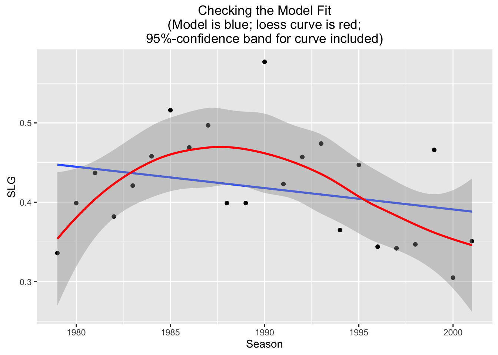

Chapter 4 Relationships Between Two Numerical Variables
4.1 Outline
In the previous chapter, we investigated methods for describing relationships between two factor variables, using
- twoway tables and row percents for numerical desriptive statistics;
- barcharts for graphical descitpive statistics;
- the chi-square test, for inference.
In this chapter, we are interested in describing relationships between two numerical variables.
In chapter 2, we learned about methods to graphically and numerically summarize one numerical variable. The methods we used were:
Graphical
- Histogram
- Density Plot
- Stem Plot
- Box Plot (and the really cool Violin Plot)
Numerical
- Median
- Percentiles (quantiles)
- 5-number summary
- Mean
- SD
- IQR
We will now be learning to describe how two numerical variables relate to one another. Throughout this chapter, we’re going to work with three different datasets: m111survey, pennstate1, and ucdavis1. The datasets pennstate1 and ucdavis1 are both surveys of students at their respective schools, very similar to what we’ve seen in m111survey. You can put these datasets into your Global Environment, take a quick look at them, and learn more about them with:
data(m111survey)
View(m111survey)
help(m111survey)
data(pennstate1)
View(pennstate1)
help(pennstate1)
data(ucdavis1)
View(ucdavis1)
help(ucdavis1)4.2 Statistical Relationships
When we look at relationships between numerical variables, there are 2 main kinds of relationships that interest us.
- Deterministic relationships
- Statistical relationships
Deterministic relationships are the type you are used to seeing in algebra class. In this kind of relationship, the value of one variable can be exactly determined by the value of the other variable.
For example, consider the relationship between degrees Fahrenheit and degrees Celcius. If \(y= ^\circ\) C and \(x= ^\circ\) F, the deterministic relationship can be written
\[y=\frac{5}{9}(x-32).\]
The degrees Celcius (\(y\)) is exactly determined by knowing the degrees Fahrenheit (\(x\)). The graph of this equation is a line. See Figure [Deterministic Relationship].
Figure 4.1: Deterministic Relationship. This graph shows the relationship between Fahrenheit and Celcius.
We can see from the graph that there is no variation in the pattern. Every temperature in Fahrenheit has exactly one corresponding temperature in Celcius. We might regard Fahrenheit and Celcius as having a perfect relationship.
Statistical relationships are the ones that we will study in this class. In this kind of relationship, there is variation from the average pattern. If we know the value of one variable, we can estimate the typical value of the other variable. However, this is only an estimation. There is no certainty!
For example, suppose we want to use the length of a person’s right handspan (the measurement of one’s outstretched right hand from thumb to pinky) to predict the person’s height. There is certainly a relationship between the length of one’s handspan and their height. People with large hands tend to be taller than people with small hands. However, there is not an equation (or a line) that will exactly tell us the height of a person with a certain handspan. Not every person with a handspan of 20 centimeters is exactly the same height. There is variation in their heights. What we’ve just described is a statistical relationship.
There are 3 tools that we will use to describe statistical relationships:
- Scatterplots
- Correlation
- Regression Equation
4.2.1 Scatterplots
As we just discussed, our intuition tells us that a person with a large right handspan tends to be tall. Let’s investigate this idea with the following research question.
Research Question: At Pennstate, how is a student’s right handspan related to his/her height?
A scatterplot is how we will graphically display the relationship between two numerical variables. Scatterplots allow us to visually identify
- overall patterns,
- directions, and
- strength of association
between two numerical variables. The best way to get a feel for the relationship between two numerical variables is to take a look at the scatterplot.
4.2.1.1 Overall Patterns
Let’s use the function xyplot() in R to create a scatterplot of the variables RtSpan and Height from the pennstate1 dataset.
xyplot(Height~RtSpan,data=pennstate1,
xlab="Right Handspan (cm)", ylab="Height (in)") Figure 4.2: Hand/Height Scatterplot. Relationship Between Right Handspan and Height
Each point, (\(x,y\)), that you see on the scatterplot represents an individual in the dataset - one of the 190 Penn State students in the survey. The \(x\)-coordinate of the point is that student’s right handspan, in centimeters. The \(y\)-coordinate of the point is that student’s height, in inches.
The ‘formula-data’ input syntax for xyplot() should be starting to become familiar to you. This is the same syntax that we used to produce the graphical outputs from chapter 2. R will plot the variable in front of the ~ along the vertical axis and the variable behind the ~ along the horizontal axis. Typically, we put the explanatory variable along the horizontal axis and the response variable along the vertical axis.
You can control how the points in the scatterplot appear using pch and col in the xyplot() function. For example, we can make the scatterplot have solid red points. See Figure[Red Points].
xyplot(Height~RtSpan,data=pennstate1,
xlab="Right Handspan (cm)", ylab="Height (in)",
col="red",pch=19) Figure 4.3: Red Points: Relationship Between Right Handspan and Height using solid red points
Note: If you are interested in making fancier scatterplots, there are different values of pch that produce various shapes for the points in the scatterplot. To learn more, consult GeekNotes. R will also provide a complete list of all available colors with:
colors()When we look at the overall pattern in the scatterplot in Figure[Hand/Height Scatterplot], it appears that students with large right handspans also tend to be tall. One question that may arise is whether this observed relationship is simply the result of the student’s sex. On average, males tend to have larger hands than females and also tend to be taller than females. As we did in chapter 2, we can look at parallel scatterplots in separate panels by “conditioning” on a category, such as Sex. See Figure[Parallel Hand/Height by Sex].
xyplot(Height~RtSpan|Sex,data=pennstate1,
xlab="Right Handspan (cm)", ylab="Height (in)",pch=19)Figure 4.4: Parallel Hand/Height by Sex: Scatterplots showing the relationship between one’s right handspan and height appear in separate panels.
We can see that the relationship we observed in the original scatterplot seems to hold separately for both males and females.
Parallel scatterplots can sometimes be hard to compare since they have separate x-axes. We can “overlay” these scatterplots, using one color for the points representing the males and another color for the points representing the females. Overlaying can be accomplished using the groups argument. See Figure[Overlayed Hand/Height by Sex].
xyplot(Height~RtSpan,groups=Sex,data=pennstate1,
xlab="Right Handspan (cm)", ylab="Height (in)",
pch=19,auto.key=TRUE)Figure 4.5: Overlayed Hand/Height by Sex: One scatterplot showing the relationship between right handspan and height colored by sex.
Note: Given several numerical variables, R can produce a group of scatterplots, one for each pair of variables—all in one graph. Such a graph is called a scatterplot matrix. For more information, consult GeekNotes.
4.2.1.2 Direction
Viewing the scatterplot allows us to detect overall patterns. One way to describe the scatterplot is by giving a name to the direction of the observed pattern.
In the scatterplot Figure[Hand/Height Scatterplot], we could say that the variables RtSpan and Height are positively associated since students with larger handspans tend to be on the tall side and students with smaller handspans tend to be on the short side.
- Positive Linear Association
Two numerical variables have a positive linear association if high values of one variable tend to accompany high values of the other and low values of one variable tend to accompany low values of the other.
To give a visualization for positively associated variables, let’s add a vertical line that marks the mean of the right handspans and a horizontal line that marks the mean of the heights to break the scatterplot into four “boxes”. See Figure[Positive Association].
Figure 4.6: Positive Association: Most of the points are in the upper right and lower left box showing a positive association between the variables.
Notice that there are more points in the upper right box and lower left box than in the other two boxes. The upper right box includes points from individuals with higher than average right handspans and higher than average heights. The lower left box includes points from individuals with lower than average right handspans and lower than average heights. When most of the points in a scatterplot are located in these two boxes, the variables have a positive linear association.
- Negative Linear Association
Two variables have a negative linear association if high values of one variable tend to accompany low values of the other and low values of one variable tend to accompany high values of the other.
Let’s take a look at an example of negatively associated variables from the m111survey dataset - GPA and height.
Figure 4.7: Negative Association: Most of the points are in the lower right and upper left box showing a negative association between the variables.
Notice that in this scatterplot, there are more points in the upper left box and the lower right box. (See Figure[Negative Association].) The upper left box includes points from individuals with lower than average GPA’s and higher than average heights. The lower right box includes points from individuals with higher than average GPA’s and lower than average heights. When most of the points in a scatterplot are located in these two boxes, the variables have a negative linear association.
- No Associaton
Two variables have no association if there is no apparent relationship between the two variables.
Let’s look at the association between an individual’s height, Height, and the hours of sleep they got last night, HrsSleep, from the pennstate1 dataset.
Figure 4.8: No Association: There is no apparent pattern in where the points lie.
In the scatterplot in Figure[No Association], it appears that all of the boxes have about the same number of points in them. When this is the case, the variables have no linear association.
So far we have been interested in variables that appear to have a linear association, and our goal has been to describe the linear association that we see in a scatterplot using the equation of straight line. Data with nonlinear association certainly exists! For example, curvilinear data follows the trend of a curve, rather than a line. You can see an example of this by looking at the fuel dataset. Read the help file on this data to understand what the variables are.
data(fuel)
View(fuel)
help(fuel)Figure 4.9: Curvilinear: Efficiency (liters of fuel required to travel 100 kilometers) versus Speed (kilometers per hour)
The scatterplot clearly shows that this data would not be well represented by a line. (See Figure[Curvilinear].) As a vehicle’s speed increases up to about 60 kph, the amount of fuel required to travel 100 kilometers decreases. However, as a vehicle’s speed increases from about 60 kph, the fuel efficiency increases: this is one type of curvilinear relationship. We will offer a rudimentary discussion of nonlinear relationships later on in this Chapter.
For now, we’ll stick with linear relationships.
4.2.2 Correlation
4.2.2.1 Strength of Association
So far, we’ve investigated relationships between two numerical variables by looking at the scatterplot and making note of the observed pattern of the points, and their direction of association. However, as we can see in the following scatterplots, we should also consider the strength of association between two variables. See FigureStrength of Association.
Figure 4.10: Strength of Association: Two examples of pairs of variables with positive linear association. The first scatterplot shows a positive linear association between Height (in) and Fastest Speed Ever Driven (mph). The second scatterplot shows a stronger positive linear association between Height (in) and Ideal Height (in).
Figure 4.11: Strength of Association: Two examples of pairs of variables with positive linear association. The first scatterplot shows a positive linear association between Height (in) and Fastest Speed Ever Driven (mph). The second scatterplot shows a stronger positive linear association between Height (in) and Ideal Height (in).
These scatterplots both display 2 variables that are positively associated, but there is less “scatter” in the second plot. The variable height appears to have a stronger association with ideal_ht than it does with fastest. To distinguish between the amount of “scatter” in a plot, it is useful to assign a numerical value to the strength of association.
- Correlation
Correlation is the numerical measure of the direction and strength of the linear association between two numerical variables.
The formula for the correlation coefficient, \(r\), is written:
\[ r=\frac{1}{n-1}\sum{\bigg(\frac{x_i-\bar{x}}{s_x}\bigg)\bigg(\frac{y_i-\bar{y}}{s_y}\bigg)}\]
where:
- \(n\) denotes the number of values in the list
- \(\sum\) means summing
- \(x_i\) denotes the individual \(x\) values
- \(\bar{x}\) denotes the average of the \(x\)’s
- \(s_x\) denotes the SD of the \(x\)’s
- \(y_i\) denotes the individual \(y\) values
- \(\bar{y}\) denotes the average of the \(y\)’s
- \(s_y\) denotes the SD of the \(y\)’s
Since this calculation can be cumbersome, we will use R’s built in function, cor(). The correlation coefficient for the variables height and fastest from the m111survey dataset plotted in the first scatterplot in FigureStrength of Association can be found by:
cor(fastest~height,data=m111survey,use="na.or.complete")## [1] 0.1708742Let’s compare this to the correlation coefficient for the variables height and ideal_ht from the m111survey dataset plotted in the second scatterplot in FigureStrength of Association.
cor(ideal_ht~height,data=m111survey,use="na.or.complete")## [1] 0.832047What we’ve just observed holds true in general.
Positively associated variables have a positive correlation coefficient, \(r>0\). Consult Geek Notes for a detailed explanation.
The stronger the association is between variables, the larger the correlation coefficient, \(r\), will be.
The same ideas hold true for negatively associated variables and variables with no association. Let’s summarize all of the properties of the correlation coefficient, \(r\).
Properties of \(r\)
\(r\) always falls between 1 and -1.
The sign of r indicates the direction of the relationship.
- \(r>0\) indicates a positive linear association
- \(r<0\) indicates a negative linear association
The magnitude of r indicates the strength of the relationship. See Figure[Correlation Values].
- \(r = 1\) indicates a perfect positive linear relationship. All points fall exactly on a line sloping upward.
- \(r = -1\) indicates a perfect negative linear relationship. All points fall exactly on a line sloping downward.
- \(r = 0\) indicates no linear relationship.
Figure 4.12: Correlation Values: The first scatterplot represents two variables that have a perfect positive linear relationship, \(r=1\). The second scatterplot represents two variables that have a perfect negative linear relationship, \(r=-1\). The third scatterplot represents two variables that have no linear relationship, \(r=0\).
You can investigate this with the following app, as well.
require(manipulate)
VaryCorrelation()Let’s look at an example.
Research Question: At UCDavis, how is a student’s mom’s height (momheight) related to their dad’s height (dadheight)?
Since we are interested in how a mother’s height is related to a father’s height, we will treat dadheight as the explanatory variable and momheight as the response variable. We will start by taking a look at the scatterplot. See Figure[Mom/Dad Height].
xyplot(momheight~dadheight,data=ucdavis1)Figure 4.13: Mom/Dad Height
Since our cloud of points seems to be somewhat shaped upward to the right, it seems that students with tall dads tend to have tall moms as well and students with short dads also have short moms. This suggests that the correlation coefficient will be positive. However, since the cloud of points is not very tightly clustered, we might think that this association is not very strong. We might predict that the correlation coefficient, \(r\), will be positive but closer to 0 than it is to 1. Let’s find out.
cor(momheight~dadheight,data=ucdavis1,use="na.or.complete")## [1] 0.25715014.2.3 Regression Equation
Regression analysis is used to numerically explain the linear relationship between two numerical variables using the equation of a line. It is much more specific than the visual analysis we’ve been making by looking at scatterplots.
Recall that the equation of the line \(y=\frac{5}{9}(x-32)\) was used to describe the deterministic relationship between degrees Celcius and degrees Fahrenheit. This equation let us determine the exact temperature in Celcius by knowing the temperature in Fahrenheit.
The regression equation is the equation of a line that is used to predict the value for the response variable (\(y\)) from a known value of the explanatory variable (\(x\)) in a statistical relationship. It describes how, on average, the response variable is related to the explanatory variable.
In general, the equation of the regression line is
\[\hat{y}=a+bx,\]
where:
\(a\) is the \(y\)-intercept. (The \(y\)-intercept is the point where the line crosses the vertical axis. It is the height of the line at \(x=0\).)
\(b\) is the slope. (The slope is the inclination or orientation of the line. It is calculated by the ratio \(\frac{\mbox{rise}}{\mbox{run}}\).)
\(x\) is the known value of the explanatory variable.
\(\hat{y}\) is the predicted value of the response variable.
The regression line is the line that best approximates the data in the scatterplot. Returning to our original research question involving the variables Height and RtSpan from the pennstate1 dataset, let’s take a look at the regression line. See Figure[Hand/Height Regression Line].
Figure 4.14: Hand/Height Regression Line: The regression line is plotted on the scatterplot showing the relationship between right handspan and height.
Each point \((x,y)\) on the scatterplot is an observation—known \(x\) and \(y\)-values. These points correspond to the measurements for an actual individual in the sample. Each point \((x,\hat{y})\) on the regression line is a known \(x\)-value and its predicted response, \(\hat{y}\).
4.2.3.1 Residuals
You can see how the regression line in Figure[Hand/Height Regression Line] seems to do a good job describing the trend of the points in the scatterplot. In fact, it “best fits” the data. The regression (best fit) line is the line that is collectively the closest, in terms of vertical measurement, to all of the points on the scatterplot. These vertical measurements are called residuals. Residuals measure the size of the prediction errors.
- Residuals
For a given data point \((x,y)\), the residual is the difference between the observed response and the response that is predicted by the regression line.
This can be written
\[y - \hat{y}.\]
On the graph, a residual is the vertical distance between a point and the regression line. Several residuals are plotted on the scatterplot shown in FigureResiduals.
## Predict Height is about 58.07,
## give or take 3.285 or so for chance variation.## Predict Height is about 61.79,
## give or take 3.209 or so for chance variation.## Predict Height is about 63.03,
## give or take 3.191 or so for chance variation.Figure 4.15: Residuals
A residual can be computed for every point on the scatterplot. The regression line \(\hat{y} = a + bx\) is determined by choosing \(a\) (intercept) and \(b\) (slope) so that the sum of the (squared) residuals is minimized.
\[\mbox{Sum of Squares }= \sum(\mbox{ residuals})^2 = \sum(y_i-\hat{y})^2 \]
Investigate how to minimize the sum of squared residuals with the following app.
require(manipulate)
FindRegLine()If you are interested in how the actual values of \(a\) and \(b\) are calculated, consult Geek Notes.
4.2.3.2 Predictions
Now that we know what the regression equation means and how it is found, let’s use it to make some statements about the Pennstate scatterplot of heights and right handspans.
Research Question: What is the predicted height of a Pennstate student with a right handspan measurement of 22 cm?
We have already seen the graph of the regression line in Figure[Hand/Height Regression Line]. Now, we would like to know the equation for this line. R has a built in function, lmGC(), to compute this equation. (The lm stands for “linear model”.) This function also has the option to graph the regression line (set graph=TRUE).
lmGC(Height~RtSpan,data=pennstate1,graph=TRUE)##
## Linear Regression
##
## Correlation coefficient r = 0.6314
##
## Equation of Regression Line:
##
## Height = 41.9593 + 1.2394 * RtSpan
##
## Residual Standard Error: s = 3.1486
## R^2 (unadjusted): R^2 = 0.3987Figure 4.16: Height/Hand Regression: In the lmGC function, the parameter graph=TRUE will plot the regression line as well as giving the equation of the regresion line.
So the equation of our regression line is:
\[\hat{y}=41.959349+1.239448 x\]
We can now answer the research question two different ways. We can use R as a calculator and plug \(x=22\) into the equation above.
41.95935+1.239448*22## [1] 69.22721A Penn State student with a right handspan of 22 centimeters will have a predicted height of 69.22721 inches.
Another way to do this is using the predict() function. The predict() function requires two inputs:
- a linear model,
- a value of the explanatory variables, \(x\).
In order to use the predict() function, you should store your linear model in a variable.
handheightmod <- lmGC(Height~RtSpan,data=pennstate1)
predict(handheightmod,22)## Predict Height is about 69.23,
## give or take 3.158 or so for chance variation.In addition to the prediction, R gives you a prediction standard error — a rough estimate of how much your prediction of the person’s height is liable to differ from his or her actual height. In general, the regression line’s prediction could easily differ from the actual \(y\) value (the height) by as much as a couple of prediction standard errors.
If you would like to have a better feel for where the actual value of \(y\) might lie, consider asking for a prediction interval, as follows:
predict(handheightmod,22,level=0.95)## Predict Height is about 69.23,
## give or take 3.158 or so for chance variation.
##
## 95%-prediction interval:
## lower.bound upper.bound
## 62.997191 75.457220You can be about 95%-confident that the actual height of a person with a handspan of 22 centimeters is somewhere between 63 and 74.5 inches — the stated bounds of the 95%-prediction interval above.
You can ask for prediction intervals at any level of confidence between 0% and 100%,simply by varying the value of the level parameter. For an 80%-prediction interval, run the command:
predict(handheightmod,22,level=0.80)## Predict Height is about 69.23,
## give or take 3.158 or so for chance variation.
##
## 80%-prediction interval:
## lower.bound upper.bound
## 65.165568 73.288843The prediction interval is narrower than before, but you pay a price for the extra precision: now you are only 80%-confident that the actual height lies somewhere inside of the interval.
4.2.3.3 Interpretation of Slope and Intercept
It’s also important that we know how to interpret the slope and intercept of a regression line. Let’s take a look at the pushups dataset.
data(pushups)
View(pushups)
help(pushups)Now, we can view the equation of the regression line as well as the scatterplot with the regression line plotted. See Figure[Pushups].
##
## Linear Regression
##
## Correlation coefficient r = -0.4675
##
## Equation of Regression Line:
##
## weight = 247.4886 + -0.8243 * pushups
##
## Residual Standard Error: s = 39.5677
## R^2 (unadjusted): R^2 = 0.2185Figure 4.17: Pushups: Scatterplot and Regression line for Pushups versus Weight Relationship
What does the intercept mean? 247.49 is the predicted weight of a GC football player who cannot do any pushups in 2 minutes.
What does the slope mean? The predicted weight of a football player changes by -0.82 pounds as the max number of pushups in two minutes increases by 1. In other words, for every one pushup increase, the predicted weight of the football player decreases by 0.82 pounds. This tells us that there is a negative association between max number of pushups and weight!
Note: The interpretation of the intercept doesn’t always make sense! Consider, for example, what would happen if we used weight as the explanatory variable and pushups as the response. See Figure[Slope/Intercept Interpretation].
##
## Linear Regression
##
## Correlation coefficient r = -0.4675
##
## Equation of Regression Line:
##
## pushups = 97.6857 + -0.2651 * weight
##
## Residual Standard Error: s = 22.4414
## R^2 (unadjusted): R^2 = 0.2185Figure 4.18: Slope/Intercept Interpretation: Slope and intercept interpretation for the regression line used to predict maximum number of pushups from weight of a football player.
Intercept Interpretation: 247.49 is the predicted maximum number of pushups of a GC football player who weighs 0 pounds can do in 2 minutes. This doesn’t make any logical sense!
Slope Interpretation: The predicted maximum number of pushups that a football player can do in two minutes changes by -0.82 as the weight of the football player increases by 1 pound. In other words, for every one pound increase in weight, the predicted maximum number of pushups decreases by 0.82.
4.2.3.4 How Well does our Regression Line fit?
If all the data in a scatterplot lie exactly on the regression line, we say that our regression line perfectly explains the data. However, this is rarely the case. We usually have points that do not lie on the regression line. Anywhere that this happens, we have variation that is not explained by the regression line. If the data is not on a line, then a line will not be a perfect explanation of the data.
One way we can measure this variation is the residual standard error — sometimes called RSE, or even \(s\), for short. This quantity does exactly what its name implies - it measures the spread of the residuals (those vertical distances between observations and the regression line). This value is in the output of the lmGC function.
However, we run into a problem when using the residual standard error to measure the variation in the plot. The residual standard error for the Height and RtSpan data from pennstate1 is 3.148589.
lmGC(Height~RtSpan,data=pennstate1)##
## Linear Regression
##
## Correlation coefficient r = 0.6314
##
## Equation of Regression Line:
##
## Height = 41.9593 + 1.2394 * RtSpan
##
## Residual Standard Error: s = 3.1486
## R^2 (unadjusted): R^2 = 0.3987For this model, the unit of measure for height is inches. Consider what happens when we change this model by converting the unit of measure for height to feet. Take a look at the scatterplots and regression lines for these two models. See Figure[Different Units].
Figure 4.19: Different Units: Compare the scatterplot and regression line for RtSpan (cm) vs. Height (inches) and the scatterplot and regression line for RtSpan (cm) vs. Height (feet).
Figure 4.20: Different Units: Compare the scatterplot and regression line for RtSpan (cm) vs. Height (inches) and the scatterplot and regression line for RtSpan (cm) vs. Height (feet).
This change in unit of the response variable does not affect the way the scatterplot of regression line looks. The regression line did an equally good job of fitting the data, in both scatterplots. It does, however, directly affect the value of the residuals. The residuals in the first plot have a much larger value than the residuals in the second plot. This causes the spread of the residuals (the residual standard error) to be bigger in the first plot. Hence, residual standard error is not the best way of measuring the variation accounted for by the regression line.
Another measure of the “explained variation” in the scatterplot is the squared correlation, \(r^2\). This also measures how well our regression line fits the data. However, it tells us the proportion of variation in the response variable that is explained by the explanatory variable. A change in unit (or scale) will not affect the value of \(r^2\).
4.2.3.5 Properties of \(r^2\)
- \(r^2\) always has a value between 0 and 1.
- \(r^2=1\) implies perfect linear association between explanatory and response variables.
- \(r^2=0\) implies no linear association.
Beware: A low \(r^2\) value does not necessarily mean that there is no relationship between the explanatory variable and the response. It might mean that a linear model is not an appropriate model! So, a low \(r^2\) value means one of two things for us:
- There is a linear relationship between the variables, but there’s just alot of scatter in the data.
- You might have the wrong model. In other words, the data might not follow a linear pattern. For example, consider the relationship we saw in the curvilinear
fueldata from before. See Figure[R-squared for Nonlinear Data].
Figure 4.21: R-squared for Nonlinear Data
##
## Linear Regression
##
## Correlation coefficient r = -0.1716
##
## Equation of Regression Line:
##
## efficiency = 11.0579 + -0.0147 * speed
##
## Residual Standard Error: s = 3.9047
## R^2 (unadjusted): R^2 = 0.0295Here, we get a small \(r^2\) value. However, there is certainly a relationship between efficiency and speed - just not a linear one! It is always important that you visually examine the data before drawing conclusions based on certain statistics!
4.3 Cautions
4.3.1 Extrapolation
The regression line we found for predicting Height from RtSpan using the pennstate1 dataset, \(\hat{y}=41.959349+1.239448x\). can be used for interpolation, i.e. predicting a height for a person that was not in the original dataset, but is within the range of right handspans covered by the dataset. However, it is inappropriate to use this regression line to predict a height for someone with a hand span that is outside of the range covered by the dataset.
- Extrapolation
Extrapolation is using a regression line to predict \(\hat{y}\)-values for \(x\)-values outside the range of observed \(x\)-values.
Sultan Kosen holds the Guiness World Record for the tallest living male. (His right handspan measures 30.48 cm, which is considerably bigger than all of the hand-spans in our dataset.) If we extrapolate using the regression line from this dataset, then we would predict his height to be \(\hat{y}=41.959349+1.239448\cdot 30.48=79.36\) inches \(\approx\) 6’ 7.5“. But he was really 8’ 3”! The prediction based on extrapolation was not very accurate.
4.3.2 Influential Observations
- Influential Observations
Influential observations are observations which have a large effect on correlation and regression:
- They have extreme \(x\)-values.
- They inflate or deflate correlation.
- They affect the slope of the regression line.
Investigate influential observations with the following app.
require(manipulate)
Points2Watch()4.3.3 Association versus Causation
Two variables having a high positive (or high negative) correlation between two variables suggests that there is a linear association that exists between them. However, correlation does not imply causation. In other words, strong correlation does not imply that one variable causes the other.
Consider the variables height and fastest in the m111survey dataset. The scatterplot and correlation coefficient suggest that taller people tend to have driven at a higher maximum speed. See Figure[Height/Fastest Scatterplot].
Figure 4.22: Height/Fastest Scatterplot
cor(height~fastest,data=m111survey,use="na.or.complete")## [1] 0.1708742There a positive correlation between height and top speed. However, this does not necessarily mean that being tall causes you to drive faster. It’s certainly not the case that tall people can’t help but have a heavy foot! There may be a confounding variable that is (at least partially) responsible for the observed association. One possible confounder is sex. See Figure[Height/Fastest by Sex]. This suggests that males tend to drive faster than females. Since males also tend to be taller than females, this helps to explain the pattern we saw in the original scatterplot.
Figure 4.23: Height/Fastest by Sex: Grouping shows that sex may be a confounding variable that helps to explain why taller people tend to drive faster.
4.3.4 Simpson’s Paradox
Recall: Simpson’s Paradox occurs when the direction of the relationship between two variables is one way when you look at the aggregate data, but turns out the opposite way when you break up the data into subgroups based on a third variable. You saw this back in Chapter 3 with two categorical variables!
Simpson’s Paradox can arise with two numerical variables as well!
Let’s look at a new dataset, sat.
data(sat)
View(sat)
help(sat)We can describe the relationship between salary (mean annual teacher salary by state in $1000s) and sat (sum of mean Verbal and mean Math scores by state) using the correlation coefficient, scatterplot, and regression line. See Figure[SAT].
##
## Linear Regression
##
## Correlation coefficient r = -0.4399
##
## Equation of Regression Line:
##
## sat = 1158.859 + -5.5396 * salary
##
## Residual Standard Error: s = 67.8893
## R^2 (unadjusted): R^2 = 0.1935Figure 4.24: SAT: Association between Average Annual Teacher Salary and Average Cumulative SAT Score (by state)
Our regression analysis suggests that as teachers are paid higher salaries, the average SAT score drops. However, our intuition tells us that higher salaries would attract better teachers, who in turn would better prepare students for the SAT. What’s going on here?
Use the following app to investigate what happens when we take into account a third variable, frac. This is the percentage of students in the state who take the SAT.
require(manipulate)
DtrellScat(sat~salary|frac,data=sat)We can see that within most subgroups, the slope of the regression line is positive, while the regression line for the overall data has a negative slope.
How can we explain this paradox?
First Observation: It turns out that states where education is considered a high priority pay their teachers higher salaries. But since education is a high priority in these states, a high proportion of students in these states want to go to college, so a high proportion of them take the SAT. Similarly, states where education isn’t such an important part of the economy or the culture tend to pay their teachers less, and they also tend to have fewer students taking the SAT. So we’ve got a positive association between frac and salary.
Check this out in Figure[Frac/Salary Scatterplot].
Figure 4.25: Frac/Salary Scatterplot: Percentage of students in the state that take the SAT vs. the average annual teacher salary.
Second Observation: When a high percentage of students in a state take the SAT, this pool of test-takers is bound to include both the very strong students and those who are not so strong, so the mean SAT score is liable to be low. On the other hand, in states where fewer students take the SAT, the students who opt to take the test are likely to be highly motivated, definitely college-bound, very studious individuals. This elite pool tends to boost the mean SAT score for the state. So we’ve got a negative association between frac and sat.
Again, check this out in Figure[Frac/SAT Scatterplot].
Figure 4.26: Frac/SAT Scatterplot: Percentage of students in the state that take the SAT vs. the average cumulative SAT score.
Finally, put it together: the positive association between salary and frac and the negative association between frac and sat results in the negative association between salary and sat.
To put it in a nontechnical nutshell: states where education is important tend to pay their teachers well, but they also “handicap” themselves by encouraging most students (including the weaker ones) to take tests like the SAT. The handicap is so pronounced that higher values of salary tend to go along with lower values of sat.
4.4 Curvilinear Fits
Frequently we have brought up the idea that the relationship between \(x\) and \(y\) — our two numerical variables — might not be a linear one. Let’s look into this idea bit further.
Consider the data frame henderson from the tigertats package:
data(henderson)
View(henderson)
help(henderson)Ricky Henderson, who played in the Major Leagues from 1979 to 2003, is widely considered to be one of the finest leadoff hitters in baseball history. The henderson data frame gives some fo his most important offensive statistics, by season. Let’s have a look at his slugging average (the average number of bases he got per at-bat) over the years (see Figure [Career Slugging]:
Figure 4.27: Slugging for Ricky Henderson, 1979-2001
We have included a regression line, but as you can see the fit doesn’t look right at all: the points on the scatter plot don’t appear to follow a line. It’s not just that there is a lot of “scatter” around the regression line; instead it seems that some other pattern – not a linear one — is at work in determining how Ricky’s slugging average varied over the years.
One way to confirm our suspicion is to run a check on the linear fit, using the check parameter for lmGC():
lmGC(SLG~Season,data=henderson,check=TRUE)##
## Linear Regression
##
## Correlation coefficient r = -0.2719
##
## Equation of Regression Line:
##
## SLG = 5.7685 + -0.0027 * Season
##
## Residual Standard Error: s = 0.0661
## R^2 (unadjusted): R^2 = 0.0739
In addition to the usual linear model information, the scatter plot contains two new features:
- a loess curve;
- an approximate 95%-confidence band around the loess curve.
The term “loess” is short for “local estimation”: a loess curve is an attempt to use only the data itself to estimate the “real” deterministic part of the relationship between the \(x\) and \(y\) variables. In particular, it doesn’t assume that the relationship is a linear one! hence it wobbles around, following the general pattern of the point son the scatter plot.
The confidence band is the slightly shaded area that surrounds the loess curve. A rough-and-ready way to interpret the interval is to say that we are pretty confident that the “real” relationship between Season and SLG — if it could somehow be graphed on the scatter plot – would lie somewhere within the band. The loess curve is simply our best “data-based” guess at that unknown relationship.
Note that the regression line wanders a bit outside of the band, and is often quite near the edge of it: this is a good indication that the “real” relationship between Season and SLG is not a linear one.
So we have “checked” the linear fit, and found it wanting. Let’s use our common sense to consider what the “real” relationship might be like.
For many professional athletes, the first couple of years in the majors leagues are tough ones, as they go up against other top-of-the-line players. But after a while they adjust —if they don’t their career stats come to an end quickly! — and a relatively long “peak” period of play ensues. Eventually, though, age and injuries catch up with the athlete, and his/her performance begins to decline.
Hence the relationship between season of play and some performance measure such as slugging average ought to be a curvilinear one, with a rise and then a fall.
Rise-and-fall curvilinear relationships can be modeled mathematically by means of quadratic equations, which have the general form:
\[y=ax^2+bx+c,\]
since these equations graph as parabolas. Let’s try to fit a second-degree curve (a parabola) to our data. This is accomplished using a new function, polyfitGC(). The function works like lmGC(), but has a new parameter degree to indicate the degree of the fitting curve:
degree=2fits a quadratic (a one-humped rise/fall or fall/rise parabola ) to the data;degree=3fits a cubic (as many as two “humps”“);degree=4fits a cubic (as many as three “humps”“);- and so on to higher degrees.
Here’s the R-code for our quadratic fit:
polyfitGC(SLG~Season,data=henderson,
degree=2,graph=TRUE)The output to the console does not give the equation of the parabola, but we do get the residual standard error and the \(R^2\) value. (Note that there is no correlation: \(r\) doesn’t make sense outside the context of linear fits.)
The graph looks promising: the parabola does appear to run through the points on the scatter plot a lot better than the line did. Also note that the \(R^2\) value is a good bit higher than it was with the linear fit (0.3825 as compared to 0.0739).
We can check this new fit as follows:
polyfitGC(SLG~Season,data=henderson,
degree=2,check=TRUE)## Polynomial Regression, Degree = 2
##
## Residual Standard Error: s = 0.0553
## R^2 (unadjusted): R^2 = 0.3825Figure 4.28: Checking Graph for the Quadratic Fit
Examining Figure [Checking Graph], we see that the parabola stays well within the band at all times: our quadratic fit looks quite promising as a way to predict \(y\) values from known \(x\) values!
The the data go only up through the 2001 season, but Henderson played 72 games with the Boston Red Sox in 2002, and 30 games in 2003 for the LA Dodgers. Let’s use the parabola and the linear fit to predict his slugging averages for those two seasons.
First, the prediction based on the linear fit:
linModel <- lmGC(SLG~Season,data=henderson)
predict(linModel,x=2002)
predict(linModel,x=2003)Now the prediction based on the quadratic fit:
quadModel <- polyfitGC(SLG~Season,degree=2,data=henderson)
predict(quadModel,x=2002)
predict(quadModel,x=2003)Here are the predictions from each model, compared with Henderson’s actual statistics:
| Season | Linear Prediction | Quadratic Prediction | Actual |
|---|---|---|---|
| 2002 | 0.386 | 0.293 | 0.352 |
| 2003 | 0.383 | 0.267 | 0.306 |
The regression line was better for 2002, but it falls too slowly: the parabola makes the better prediction for 2003. If we had to predict how Ricky would have done had he stayed on for the 2004 season, surely we would go with the prediction provided by the quadratic fit!
4.5 Thoughts on R
4.5.1 New R Functions
Know how to use these functions:
xyplot()
lmGC()predict()polyfitGC()